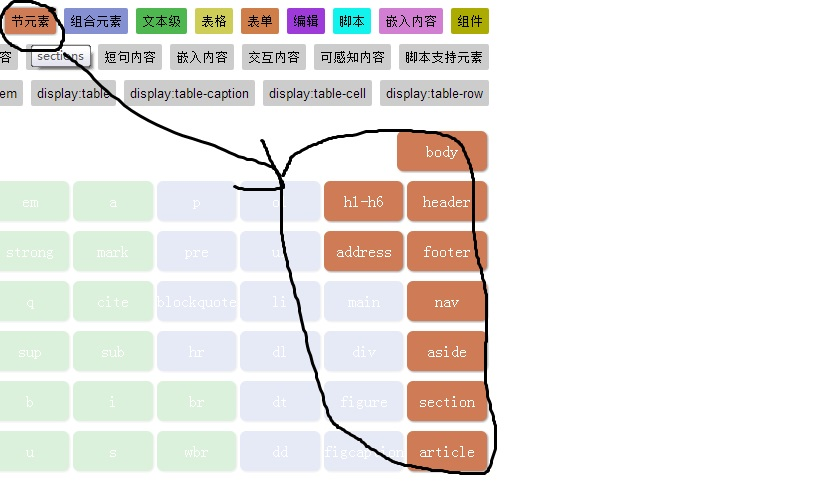
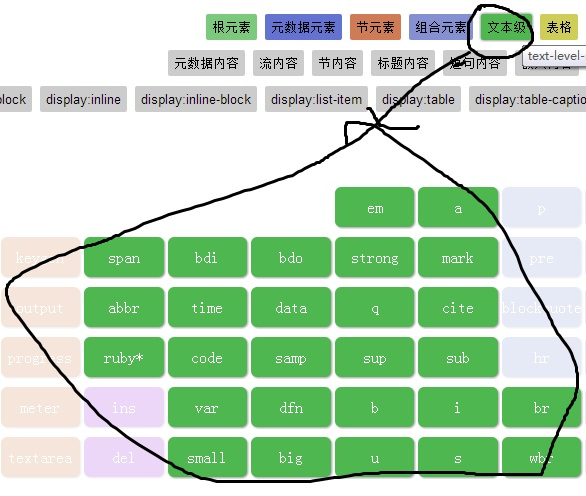

节点元素如下图所示
部分节点元素的展示点击这里
文本元素如下图所示
| 标记 | 显示效果 |
|---|---|
| <b></b> | 文字以粗体方式显示 |
| <i></i> | 文字以斜体方式显示 |
| <u></u> | 文字以加下划线方式显示 |
| <s></s> | 文字以加删除线方式显示 |
| <big></big> | 文字以放大方式显示 |
| <small></small> | 文字以缩小方式显示 |
| <strong></strong> | 文字以加强强调方式显示 |
| <em></em> | 文字以强调方式显示 |
网页有图片的链接和网址的链接，为<img>和<a>
具体例子点击这里
列表有无序列表、有序列表和定义列表。分别是<ul></ul>，<ol></ol>，<dl></dl>
具体例子点击这里
一个完整的表格标记包括<thead>、<tbody>和<tfoot>
具体例子点击这里
| 特殊字符 | 表示文字 |
|---|---|
| （空格） | |
| < | < |
| > | > |
| & | & |
| ® | ® |
| ÷ | ÷ |
| ¥ | ¥ |
| © | © |